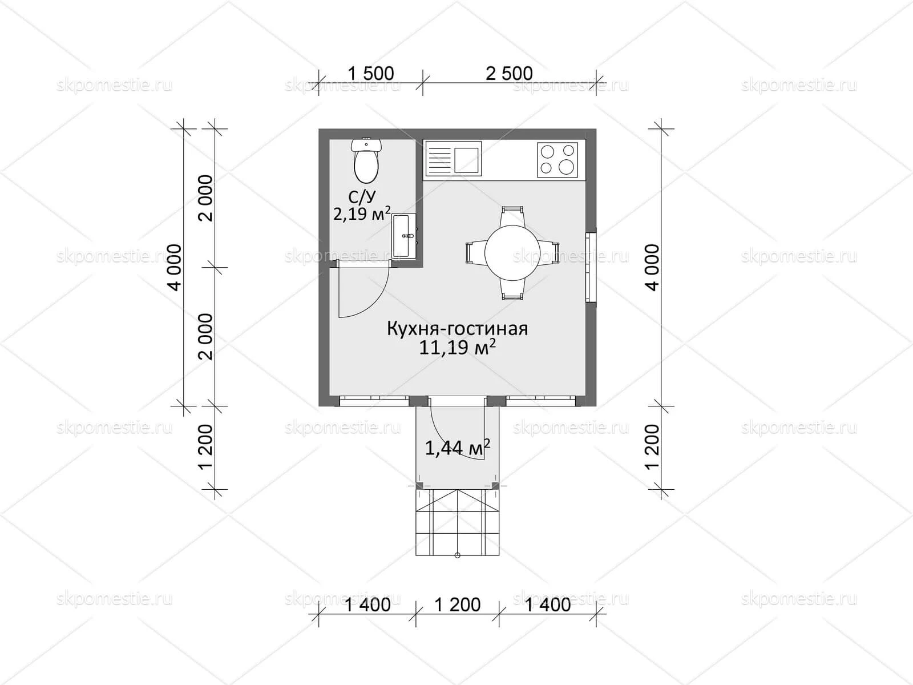
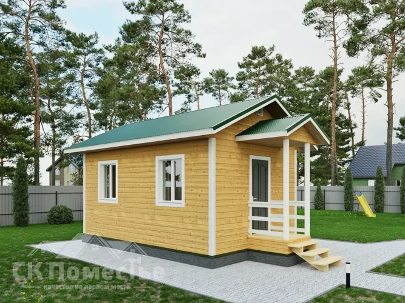
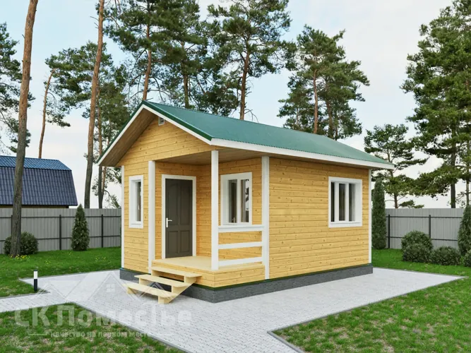
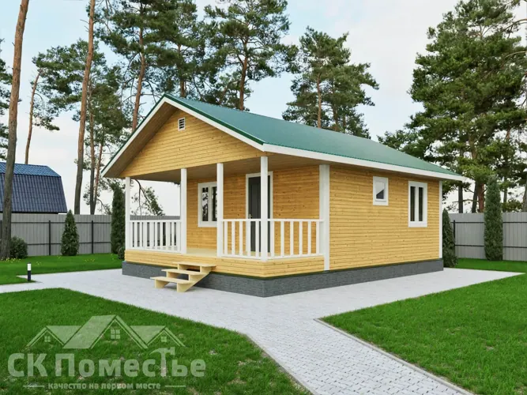
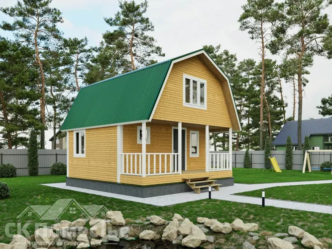
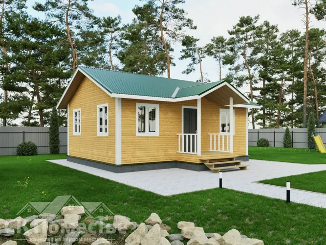

Московская область, СНТ "Звёздочка"
8 на 8 м 30 дн
Об объектеДачный каркасный дом
с крытым крыльцом

Одна жилая комната, отдельный санузел и крыльцо с площадкой у входа. Выберите помещение, чтобы увидеть его на плане.
Металлическая сетка от грызунов и антисептирование основания, лаг и чернового пола. Актуальные условия акции уточняйте в компании.
Три года на материалы и три года на работы. Официальная обслуживаемая гарантия.
70% при завозе материалов на участок, оставшиеся 30% после подписания передаточного акта.
Т-Банк, Альфа-Банк, Сбербанк, МТС Банк, Локо-Банк, Совкомбанк, ОТП Банк, Кредит Европа Банк и Ренессанс Банк.
Условия кредитования ↗Выберите, что хотите поменять. Компания рассчитывает стоимость изменений за один день.
8 на 8 м 30 дн
Об объекте9 на 8 м 17 дн
Об объекте6 на 10 м 17 дн
Об объекте8 на 8 м 13 дн
Об объекте5 на 4 м 7 дн
Об объекте6 на 8 м 10 дн
Об объекте8 на 8.5 м 26 дн
Об объекте6 на 6 м 20 дн
Об объекте6 на 5 м 9 дн
Об объекте9 на 7 м 18 дн
Об объекте6 на 6 м 6 дн
Об объекте12 на 11 м 35 дн
Об объекте6 на 6 м 14 дн
Об объекте6 на 6 м 14 дн
Об объекте8 на 6 м 13 дн
Об объекте13 дней
Об объекте6 на 8 м 23 дн
Об объекте9 на 7 м 20 дн
Об объекте6 на 8 м 23 дн
Об объекте9 на 7 м 37 дн
Об объектеСвяжитесь с компанией по бесплатному номеру 8 (800) 707-73-53 или оставьте заявку на официальном сайте.
Вносим изменения, подбираем комплектацию и составляем подробное техническое описание.
Все договоренности отразим в комплектации, пропишем гарантию и зафиксируем стоимость.
Вы оплачиваете 70% стоимости после того, как мы привезем все материалы на участок.
Строим точно в срок с соблюдением регламентов, используя современные инструменты.
30% оплачивается по окончании строительства и подписания акта приема-передачи объекта.
70% при завозе материалов на площадку и 30% по окончании строительства.
Оплата по счету для физлица, осуществляется в кассе любого банка или через мобильное приложение банка
Выгодные условия и льготная ипотека от «Почта Банк»
Вы можете воспользоваться сертификатом материнского капитала для оплаты строительства дома для ПМЖ
Мы принимаем оплату наличными или переводом и выдаём все подтверждающие документы (квитанции)
Компактный каркасный дом рассчитан на дачный отдых. Деревянная обшивка, утеплённые стены и крыльцо входят в проект. Планировку и материалы компания может изменить по вашим пожеланиям.
Свяжитесь со специалистом компании, чтобы уточнить комплектацию, сроки установки, стоимость и условия оплаты. Есть варианты кредита и рассрочки.









